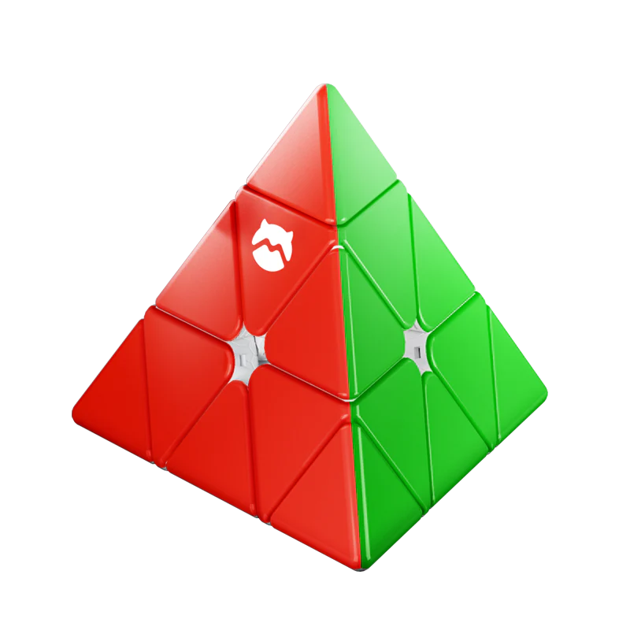

-
RUBIKS CUBE
-
Кубик Рубіка — це механічна головоломка, винайдена угорським скульптором та професором архітектури Ерне Рубіком у 1974 році. Спочатку ця головоломка називалася «Магічний Кубик», але пізніше була перейменована на честь свого творця.
Кубик Рубика складається з 26 менших кубиків, які утворюють більший куб з розмірами 3×3×3. Кожна з шести граней кубика складається з дев'яти квадратів, пофарбованих у один з шести кольорів. Завдання головоломки полягає в тому, щоб повернути кубик таким чином, щоб кожна грань була одного кольору.
Купити тут
-
4X4 CUBE
-
Кубик Рубика 4x4, також відомий як "Рубик's Revenge" (Помста Рубика), є різновидом класичної головоломки Кубика Рубика. Як випливає з назви, цей кубик має розмірність 4×4×4, що робить його складнішим за стандартний Кубик Рубика 3×3×3. Винахідником цього кубика є угорський інженер Петер Себештьєн.
Кубик Рубика 4×4 є більш складним і викликовим для шанувальників головоломок і любителів спідкубінгу, що робить його популярним серед тих, хто вже освоїв класичний Кубик Рубика 3×3.
Купити тут
-
5X5 CUBE
-
Кубик Рубіка 5x5, також відомий як "Professor's Cube" (Кубик Професора), є більш складною версією класичного Кубика Рубіка. Як випливає з назви, цей кубик має розмірність 5×5×5, що робить його ще складнішим за Кубики Рубіка 3x3 і 4x4. Винайдений угорським інженером Удо Кремером, цей кубик призначений для досвідчених любителів головоломок.
Кубик Рубіка 5×5 є більш складною та цікавою головоломкою для шанувальників, які вже освоїли Кубики Рубіка 3x3 і 4x4, та пропонує нові виклики і можливості для вдосконалення навичок спідкубінгу.
Купити тут
-
MEGAMINX
-
Мегамінкс (Megaminx) — це складна механічна головоломка, подібна до Кубика Рубіка, але у формі додекаедра, тобто багатогранника з 12 п'ятикутними гранями. Винайдена японським винахідником Хізо Окамо, Мегамінкс став популярним серед шанувальників головоломок через свою складність і захопливий процес збирання.
Мегамінкс є цікавою і складною головоломкою, яка пропонує нові виклики навіть для досвідчених шанувальників Кубика Рубіка, завдяки своїй унікальній формі та великій кількості можливих комбінацій.
Купити тут
-
PYRAMINX
 -
Пірамідка Рубіка, або Pyraminx, — це механічна головоломка у формі тетраедра (чотиригранної піраміди), створена німецьким винахідником Уве Меффертом у 1970-х роках. Хоча вона має інший вигляд та механізм порівняно з класичним Кубиком Рубіка, завдання її складання подібне: потрібно повернути пірамідку так, щоб кожна з чотирьох граней складалася з трикутників одного кольору.
Пірамідка Рубіка є цікавою та захопливою головоломкою, яка пропонує нові виклики і можливості для любителів механічних головоломок, та є відмінним доповненням до класичного Кубика Рубіка.
Купити тут
-
SPEEDCUBING
-
Спідкубінг — це спортивна дисципліна, яка полягає в швидкісному збиранні головоломок типу Кубика Рубіка та його варіацій. Учасники змагань намагаються зібрати головоломку за найкоротший час, використовуючи спеціальні техніки та алгоритми.
Кубик Рубіка 3×3: Класична головоломка, з якої все почалося. Інші кубики: Кубики різних розмірів, включаючи 2×2, 4×4, 5×5, 6×6, 7×7. Інші форми: Pyraminx (пірамідка), Megaminx (додекаедр), Skewb, Square-1 та інші. Спідкубінг є захоплюючим і технічно складним видом спорту, який вимагає не лише швидкості і спритності рук, але й високої концентрації, пам'яті та стратегічного мислення.
Просмотр турнирів